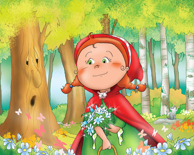

Caperucita Roja
Había una vez una dulce niña que quería mucho a su madre y a su abuela. Les ayudaba en todo lo que podía y como era tan buena el día de su cumpleaños su abuela le regaló una caperuza roja. Como le gustaba tanto e iba con ella a todas partes, pronto todos empezaron a llamarla Caperucita roja.
Un día la abuela de Caperucita, que vivía en el bosque, enfermó y la madre de Caperucita le pidió que le llevara una cesta con una torta y un tarro de mantequilla. Caperucita aceptó encantada.
- Ten mucho cuidado Caperucita, y no te entretengas en el bosque.
- ¡Sí mamá!
La niña caminaba tranquilamente por el bosque cuando el lobo la vio y se acercó a ella.
- ¿Dónde vas Caperucita?
- A casa de mi abuelita a llevarle esta cesta con una torta y mantequilla.
- Yo también quería ir a verla…. así que, ¿por qué no hacemos una carrera? Tú ve por ese camino de aquí que yo iré por este otro.
- ¡Vale!
El lobo mandó a Caperucita por el camino más largo y llegó antes que ella a casa de la abuelita. De modo que se hizo pasar por la pequeña y llamó a la puerta. Aunque lo que no sabía es que un cazador lo había visto llegar.
- ¿Quién es?, contestó la abuelita
- Soy yo, Caperucita - dijo el lobo
- Que bien hija mía. Pasa, pasa
El lobo entró, se abalanzó sobre la abuelita y se la comió de un bocado. Se puso su camisón y se metió en la cama a esperar a que llegara Caperucita.
La pequeña se entretuvo en el bosque cogiendo avellanas y flores y por eso tardó en llegar un poco más. Al llegar llamó a la puerta.
- ¿Quién es?, contestó el lobo tratando de afinar su voz
- Soy yo, Caperucita. Te traigo una torta y un tarrito de mantequilla.
- Qué bien hija mía. Pasa, pasa
Cuando Caperucita entró encontró diferente a la abuelita, aunque no supo bien porqué.
- ¡Abuelita, qué ojos más grandes tienes!
- Sí, son para verte mejor hija mía
- ¡Abuelita, qué orejas tan grandes tienes!
- Claro, son para oírte mejor…
- Pero abuelita, ¡qué dientes más grandes tienes!
- ¡¡Son para comerte mejor!!
En cuanto dijo esto el lobo se lanzó sobre Caperucita y se la comió también. Su estómago estaba tan lleno que el lobo se quedó dormido.
Caperucita rojan ese momento el cazador que lo había visto entrar en la casa de la abuelita comenzó a preocuparse. Había pasado mucho rato y tratándose de un lobo…¡Dios sabía que podía haber pasado! De modo que entró dentro de la casa. Cuando llegó allí y vio al lobo con la panza hinchada se imaginó lo ocurrido, así que cogió su cuchillo y abrió la tripa del animal para sacar a Caperucita y su abuelita.
- Hay que darle un buen castigo a este lobo, pensó el cazador.
De modo que le llenó la tripa de piedras y se la volvió a coser. Cuando el lobo despertó de su siesta tenía mucha sed y al acercarse al río, ¡zas! se cayó dentro y se ahogó.
Caperucita volvió a ver a su madre y su abuelita y desde entonces prometió hacer siempre caso a lo que le dijera su madre.